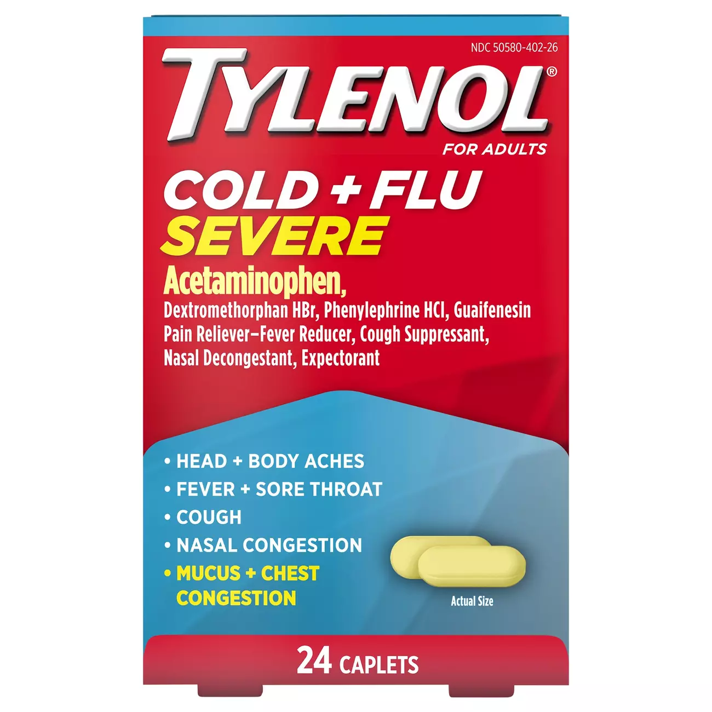

Basic Medications and their Usage
Tylenol
*** The following text is from the article "Tylenol: Uses, Dosage, Side Effects, Warnings" or can be found on Drugs.com ***
What is Tylenol?
Tylenol is a pain reliever and a fever reducer. Tylenol is used to reduce fever and relieve minor pain caused by conditions such as colds or flu, headache, muscle aches, arthritis, fevers.
Tylenol side effects
Get emergency medical help if you have signs of an allergic reaction to Tylenol: hives; difficulty breathing; swelling of your face, lips, tongue, or throat. In rare cases, acetaminophen may cause a severe skin reaction that can be fatal, even if you took Tylenol in the past and had no reaction. Stop taking this medicine and call your doctor right away if you have skin redness or a rash that spreads and causes blistering and peeling. Stop taking this medicine and call your doctor at once if you have signs of liver problems: stomach pain (upper right side); loss of appetite; tiredness, itching; dark urine, clay-colored stools; or jaundice (yellowing of the skin or eyes). Less serious Tylenol side effects may be more likely, and you may have none at all. This is not a complete list of side effects and others may occur. Call your doctor for medical advice about side effects.

Tylenol(Cold + Fever Severe)
Tylenol (Infants Pain + Fever)